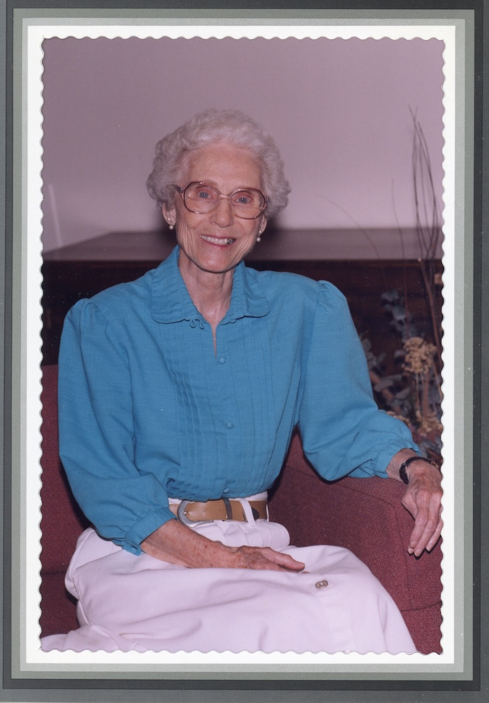

 Evelyn Eugenia Napper Kelly Paintings by Year (approximate): 1940-1960 1960-1970 1970-1980 1980-1990 Sermons & Other Writings: Sermon: “What are Human Beings?” (2017) The Male Disciples and John (1991)